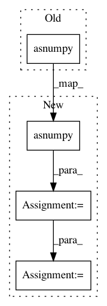

dfac51fcd0fbceb3f394a1d8f1ab7c8652e9cf78,gluonvision/utils/metrics/voc_segmentation.py,,batch_intersection_union,#Any#Any#Any#Any#,19
Before Change
range=(mini, maxi))
area_pred, _ = np.histogram(predict.asnumpy(), bins=nbins,
range=(mini, maxi))
area_lab, _ = np.histogram(target.asnumpy(), bins=nbins,
range=(mini, maxi))
area_union = area_pred + area_lab - area_inter
return area_inter, area_union
After Change
maxi = nclass - 1
nbins = nclass
predict = predict.asnumpy()
target = target.asnumpy()
if ignore_bg:
mini = 1
nbins -= 1
predict = predict * (target > 0).astype(predict.dtype)
else:
predict = predict * (target >= 0).astype(predict.dtype)
//intersection = predict * (F.equal(predict, target)).astype(predict.dtype)
intersection = predict * (predict == target)
// areas of intersection and union
area_inter, _ = np.histogram(intersection, bins=nbins,
range=(mini, maxi))
area_pred, _ = np.histogram(predict, bins=nbins,
In pattern: SUPERPATTERN
Frequency: 4
Non-data size: 4
Instances
Project Name: dmlc/gluon-cv
Commit Name: dfac51fcd0fbceb3f394a1d8f1ab7c8652e9cf78
Time: 2018-04-23
Author: 8041160+zhanghang1989@users.noreply.github.com
File Name: gluonvision/utils/metrics/voc_segmentation.py
Class Name:
Method Name: batch_intersection_union
Project Name: bethgelab/foolbox
Commit Name: d032ee03dcb302a5c71919ad43434eb327522de3
Time: 2018-07-08
Author: git@jonasrauber.de
File Name: foolbox/models/mxnet_gluon.py
Class Name: MXNetGluonModel
Method Name: predictions_and_gradient
Project Name: lanpa/tensorboardX
Commit Name: 92e275004b35b21633107d6f34a4dcccbc5c9fce
Time: 2017-09-04
Author: huang.dexter@gmail.com
File Name: tensorboardX/x2num.py
Class Name:
Method Name: mxnet_np
Project Name: deepinsight/insightface
Commit Name: fd10b74b45692e53047149cb4d526067845b4a7d
Time: 2020-11-06
Author: guojia@gmail.com
File Name: deploy/face_model.py
Class Name: FaceModel
Method Name: get_feature